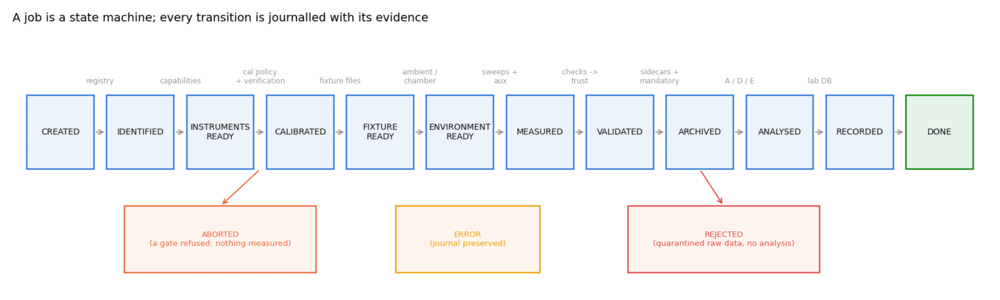
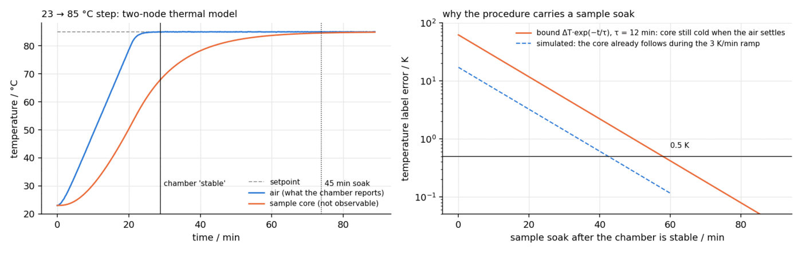
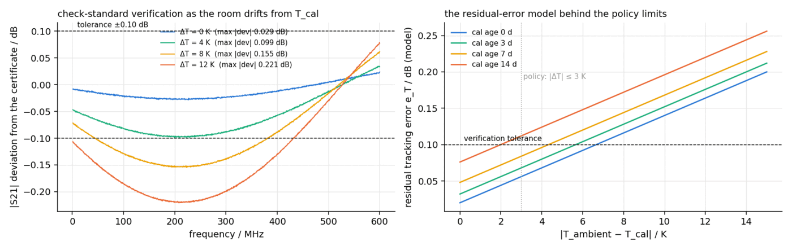

labauto
Runs a high-frequency cable laboratory as a programmable, traceable, self-validating measurement system.
The problem
Most laboratory automation is a script: send SCPI commands, save whatever comes back. The script does not know whether the calibration expired yesterday, whether the operator scanned the wrong sample, whether the chamber had actually settled, or whether the data it just saved is physically plausible. Six months later, nobody can prove what the numbers in the database actually were measured under.
The question this project answers: what does it take for a laboratory to refuse a bad measurement before it happens, validate every result before accepting it, and reproduce any result from its archive alone?
What was built
An operating layer for the laboratory: procedures declare what a measurement is; a journalled engine executes them through gates, validation and archival.
Takes
- A scanned barcode and a sample registry
- A procedure file: sweep, calibration policy, checks, downstream analysis
- Instruments over socket, VISA — or the built-in simulators
- A climate chamber profile, for temperature sweeps
Produces
- A sealed job directory: raw files, sidecar, hashed manifest
- A trusted / flagged / rejected decision with recorded reasons
- Rows in the laboratory database, refusals included
- Bit-exact replay of any archived job, months later
The hard part
The hard part is measurement-aware execution: the engine has to know enough physics to distrust its own instruments. Is the trace noise consistent with the IF bandwidth? Does the electrical length match the length on the sample's registry entry? Is the high-frequency loss consistent with the DC loop resistance the ohmmeter just read? Is the far end actually terminated, or did someone forget? Each check is cheap; together they are the difference between a database and a pile of files.
The second hard part is doing all of this without a laboratory. The simulators are behavioural models with real error physics — a VNA whose residual errors depend on calibration age and temperature drift, a chamber with a two-node thermal model, cables whose defects and losses respond to temperature — so a climate sweep that would take hours on the bench runs in seconds in the test suite, and the gates can be tested by making measurements go wrong on demand.

Checked against ground truth
The tests exercise the laboratory the way reality would — by breaking it.
| What was checked | Result |
|---|---|
| Stale calibration, failed verification, wrong environment | job refused at the gate, before measuring |
| Defective and mislabelled samples | caught by validation; flagged or quarantined |
| Sealed archive replayed months later | bit-exact reproduction of the sealed result |
| Manifest tamper check | any modified file named on verify |
| Barcode check digits (GS1 + internal mod-36) | corrupt codes rejected, round trip exact |
| Full climate sweep in simulation | seconds in the test suite, hours on a bench |


What it does not claim
From the report's own limitations section:
- Real-hardware paths (VISA, socket SCPI) are implemented but exercised only against the simulators here.
- The simulators are behavioural, not electromagnetic: they reproduce error structure, not any particular instrument.
- One laboratory only — cross-site comparison is deliberately the next project's job.
Where it sits in the toolchain
This is the layer that turns cablecheck from a tool you run into a laboratory that runs itself. Its sealed archives are exactly what labplatform ingests to compare sites, and a linktwin harness can name one of its job directories as a cable source — length, temperature, trust and hashes come from the sidecar, and the manifest is verified before the data is touched.